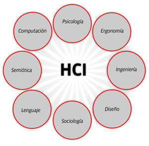

Interacción Humano - Computadora
La disciplina que estudia cómo las personas interactúan con las computadoras y hasta qué punto las computadoras se desarrollan para interactuar con las personas se llama Interacción Humano-Computadora. HCI consta de tres componentes: los usuarios, los ordenadores y la interacción entre ellos.
La Interacción Humano-Computadora se convirtió oficialmente en una disciplina con el advenimiento de la computadora personal. Con el primer Macintosh, IBM PC 5150 y Commodore 64 utilizados en la oficina, la gente empezó a darse cuenta de cómo esta transición afectará no sólo a su trabajo sino a sus vidas en general. Los PCs fueron lanzados con muchas nuevas características como procesadores de texto, facilidades de juego y ayudas de contabilidad. Con el tiempo, su nivel de sofisticación aumentó hasta el punto en que el objetivo era hacer que la interacción hombre-computadora se asemejara a la interacción entre humanos, de la forma más natural y sin fisuras posible.
HCI es un dominio interdisciplinario que abarca disciplinas como la informática, la ingeniería de los factores humanos, la inteligencia artificial, la lingüística, la filosofía, la antropología y la ciencia cognitiva.
En los últimos cinco años, HCI ha pasado rápidamente de estudiar la interacción con los ordenadores de sobremesa a centrarse casi exclusivamente en los dispositivos móviles.

Imagen 3 - HCI. Tomada de https://ihcbymarianavenegas.blogspot.com/2018/03/1.html